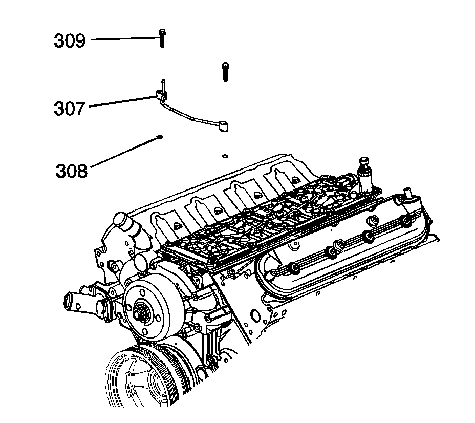
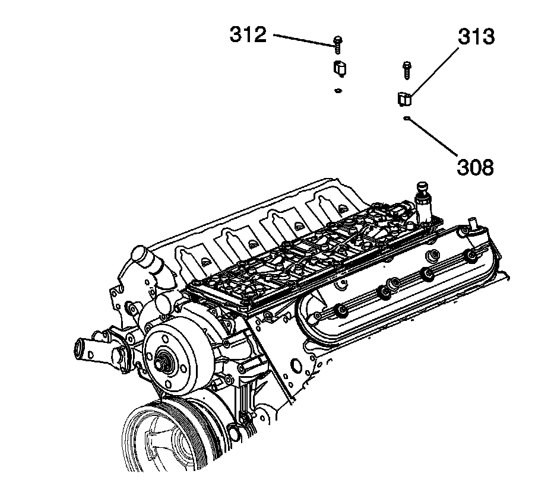

Coolant Air Bleed Pipe Assembly Replacement
Coolant Air Bleed Pipe Assembly Replacement (RPOs LC9/LY5/LMG/L76/L92)
Removal Procedure

1. If replacing the rear coolant air bleed covers, remove the intake manifold. Otherwise proceed to the next step.
2. Remove the air cleaner outlet duct.
3. Drain the cooling system. Refer to Draining and Filling Cooling System (Vac-N-Fill).
4. Reposition the radiator vent inlet hose clamp (1) at the coolant air bleed pipe fitting.
5. Remove the radiator vent inlet hose (2) from the coolant air bleed pipe fitting.

6. Remove the coolant air bleed pipe bolts (309) (intake manifold shown removed for clarity).
7. Remove the coolant air bleed pipe (307) and seals (308).

8. Remove the coolant air bleed cover bolts (312), if required.
9. Remove the coolant air bleed covers (313) and seals (308), if required.

10. Remove the seals (308) from the coolant air bleed pipe and/or covers.
11. Discard the seals.
Installation Procedure
Important: Position the O-ring seal (308) onto the nipple portion of the pipe.
1. Install the seals onto the coolant air bleed pipe and/or covers.
2. Install the coolant air bleed pipe (307) and seals (308) onto the cylinder heads.
Notice: Refer to Fastener Notice.
3. Install the coolant air bleed pipe bolts (309).
Tighten the bolts to 12 N.m (106 lb in).
4. Install the coolant air bleed covers (313) and seals (308), if required.
5. Install the coolant air bleed cover bolts (312), if required.
Tighten the bolts to 12 N.m (106 lb in).
6. Install the radiator vent inlet hose (2) to the coolant air bleed pipe fitting.
7. Position the radiator vent inlet hose clamp (1) at the coolant air bleed pipe fitting.
8. Install the air cleaner outlet duct.
9. Fill the cooling system. Refer to Draining and Filling Cooling System (Vac-N-Fill).
10. If the rear coolant air bleed covers were replaced, install the intake manifold.